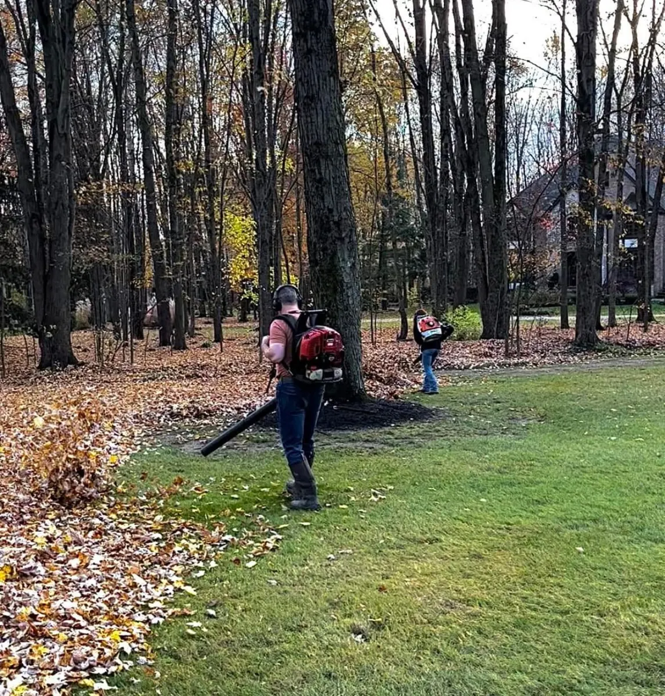

The Northeast Ohio leaf-drop timeline, why November cleanups cost more than October ones, and what a real cleanup actually includes.

Every October we get the same call in the same week: the leaves came down all at once, the yard is buried, and everyone in Aurora wants a cleanup crew on Saturday. By then our schedule has been full for a month.
Here is how fall cleanup timing actually works in Northeast Ohio, why booking in September costs less than booking in November, and what a real cleanup includes.
Our tree canopy does not drop on one date. It drops in waves, and understanding the waves is the whole game.
That is why a single cleanup visit is usually the wrong plan for a property with mature trees. If we come once in mid-October we are cleaning up half the leaves and leaving before the oaks drop. Most wooded properties here need two visits, sometimes three.
Three separate ways, and they compound.
The work gets harder. Dry leaves in October blow and vacuum easily. November leaves in Northeast Ohio are wet, matted, and frozen to the turf underneath. The same property takes noticeably longer, and time is what you are paying for.
Your lawn takes damage. A heavy leaf mat left through a wet November smothers turf and creates ideal conditions for snow mold, which shows up as matted gray or pink patches when the snow melts in March. Then you are paying for repair seeding in spring on top of the cleanup you already bought.
The schedule is gone. This is the practical one. Cleanup crews in this area book out three to four weeks by mid-October. Homeowners who call after the big drop are competing for the same handful of slots as everyone else, and the last week before the first hard freeze is genuinely unbookable.
There is a wide gap between a leaf blowing service and an actual fall cleanup. What we do on a full cleanup:
That final mow matters more than people expect. Grass left long going into winter mats down under snow and is a primary driver of snow mold. Grass cut too short heading into a Northeast Ohio winter loses crown protection. There is a correct height and it is worth getting right.
A light layer of shredded leaves left in landscape beds is genuinely good — free insulation and organic matter. A thick mat of whole wet leaves is not. It holds moisture against crowns, invites voles to tunnel and chew through the winter, and creates the perfect overwintering habitat for fungal problems.
The distinction is depth and condition. Shredded and thin, leave it. Whole and matted, remove it.
Practical scheduling note: the same window where cleanup slots disappear is the window where snow contracts fill. Homeowners who handle both in one call in September lock their spot in both routes and stop thinking about it. Handling them separately in November means competing for whatever is left of each.
If you are leaving town for the winter, this is also the moment to set up home watch so the property is checked while you are gone.
Book the service in late August or early September; schedule the actual visits for mid-to-late October and again in early-to-mid November. Properties with heavy oak cover should plan on that second visit — oaks hold their leaves weeks after the maples finish.
If you have mature trees, usually yes. A single mid-October visit misses the oak drop entirely, and a single November visit means the earlier leaves sat on your turf for six weeks. Open properties with few trees can often get away with one well-timed visit.
The most common consequences are snow mold in spring, which shows as matted gray or pink patches when snow melts, and thin or dead turf where the heaviest leaf mat sat. Wet leaf mats also clog drainage outlets and give voles cover to tunnel through the lawn all winter.
It varies widely with lot size and tree density — a small village lot with two trees is a different job from an acre in Bainbridge under mature canopy. We quote from a walkthrough and can price single-visit or multi-visit plans so you can compare.
Our October and November cleanup routes fill by early fall. Get a free walkthrough estimate for your property in Aurora, Chagrin Falls, Bainbridge, South Russell, Auburn, or Mantua.
Book My Fall Cleanup